Contrainte thermique
La Contrainte thermique est la charge thermique imposée au corps (métabolisme + ambiance + vêtements) ; l'astreinte est la réponse physiologique du travailleur. L'évaluation se fait par l'indice WBGT (RSST annexe V). La température corporelle ne doit pas dépasser 38 °C (OMS) ou 38,5 °C (ACGIH, travailleur acclimaté). En mine, la chaleur souterraine en profondeur et le froid extrême en surface au Nord sont des préoccupations majeures.
Table des matières
- Contrainte vs astreinte
- Thermorégulation
- Effets sur la santé
- Évaluation WBGT
- Réglementation RSST
- Travail au froid
- Mesures préventives
- Application terrain
- Ressources
Contrainte vs astreinte
| Terme | Définition |
|---|---|
| Contrainte | Charge totale imposée au corps : ambiance (T°, humidité, vitesse air, rayonnement), métabolisme, habillement |
| Astreinte | Réponse physiologique : T° centrale, fréquence cardiaque, niveau de sudation |
Thermorégulation
La température corporelle est maintenue entre 36,5 et 37,5 °C par l'hypothalamus.
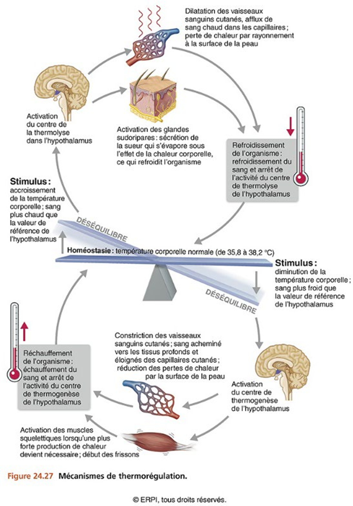
Toucher l'image pour l'agrandirQuatre mécanismes d'échange thermique opèrent en parallèle.
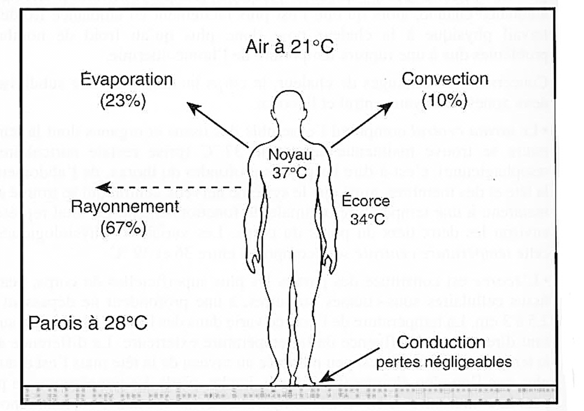
Toucher l'image pour l'agrandir| Mécanisme | Description |
|---|---|
| Rayonnement | Ondes infrarouges, n'est pas affecté par T° ou humidité de l'air |
| Conduction | Contact direct avec un objet |
| Convection | Échange avec l'air environnant (dépend vitesse air) |
| Évaporation | Sueur. Principal mécanisme de dissipation. Réduit par vêtements imperméables, humidité élevée, T° air proche T° peau |
Régulation par sudation (perte d'eau, d'électrolytes) et par voie vasomotrice (vasodilatation cutanée, vasoconstriction interne).
Acclimatation : 8 à 21 jours à 2 h/jour. La plupart des bénéfices apparaissent après 4 jours. Se perd à la même vitesse.
L'isolation thermique des vêtements est exprimée en valeur Clo et conditionne l'évacuation de chaleur.
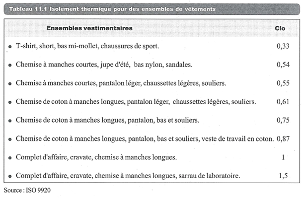
Toucher l'image pour l'agrandirL'hydratation doit remplacer environ 80 % de l'eau perdue (art. 145 RSST).
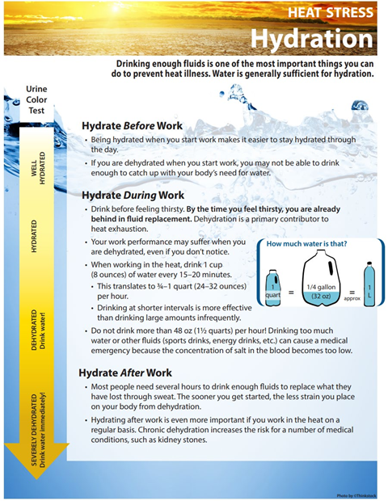
Toucher l'image pour l'agrandirEffets sur la santé
Travailler à la chaleur en mine
- Inconfort, baisse de performance (mémoire, décisions, erreurs).
- Crampes, déshydratation, syncope.
- Épuisement par la chaleur.
- Coup de chaleur : T° centrale > 40 °C, urgence médicale.
Froid
- Local : gelures (T° peau < 7 °C), pied d'immersion ou de tranchées.
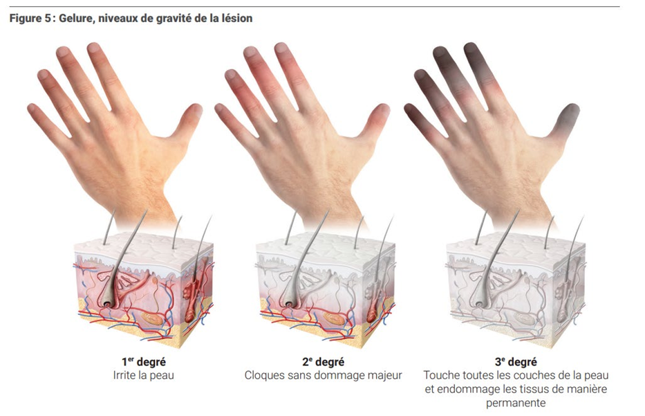
Toucher l'image pour l'agrandir- Systémique : hypothermie (légère 35-36,5 ; modérée 32-35 ; sévère 30-32 ; danger de mort < 28 °C).
- Baisse de dextérité, allongement du temps de réaction.
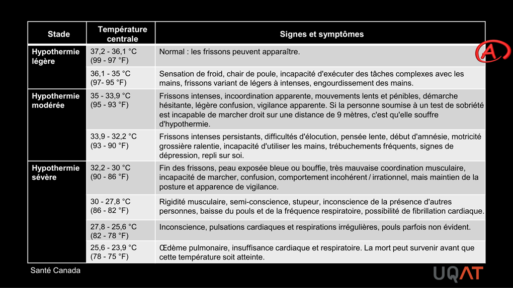
Toucher l'image pour l'agrandirÉvaluation WBGT
L'indice WBGT (Wet Bulb Globe Temperature) est imposé par le RSST art. 122, annexe V.
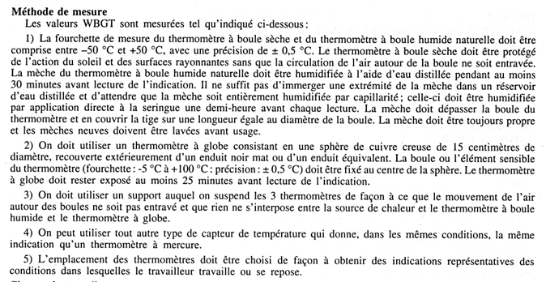
Toucher l'image pour l'agrandirDeux équations selon le contexte
| Condition | Équation |
|---|---|
| Extérieur, avec charge solaire | $WBGT = 0{,}7 WB + 0{,}2 GT + 0{,}1 DB$ |
| Intérieur ou sans charge solaire | $WBGT = 0{,}7 WB + 0{,}3 GT$ |
- WB : thermomètre à boule humide naturelle.
- GT : thermomètre à globe noir.
- DB : thermomètre sec.
Démarche
- Identifier les tâches à risque (intermittent vs continu).
- Mesurer WBGT (représentatif du poste).
- Évaluer la charge métabolique (léger, moyen, lourd) selon tableau 2 annexe V.
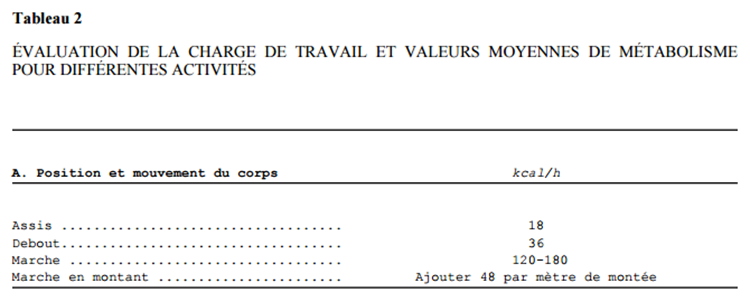
Toucher l'image pour l'agrandir- Comparer aux courbes travail/repos du graphique annexe V.
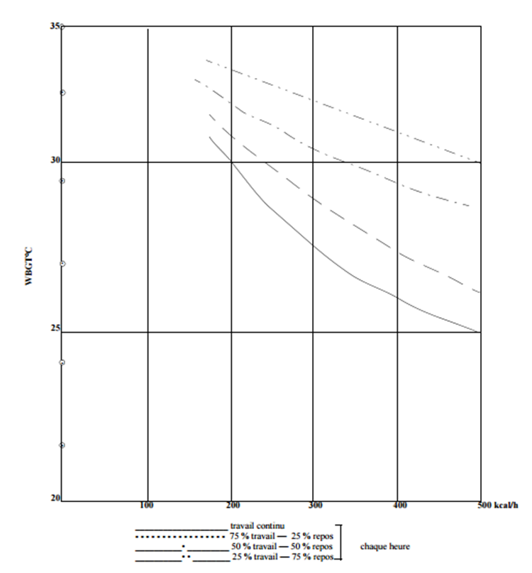
Toucher l'image pour l'agrandirAjustement vêtements (référence ACGIH non incluse au RSST). S'applique aux travailleurs acclimatés en bonne santé.
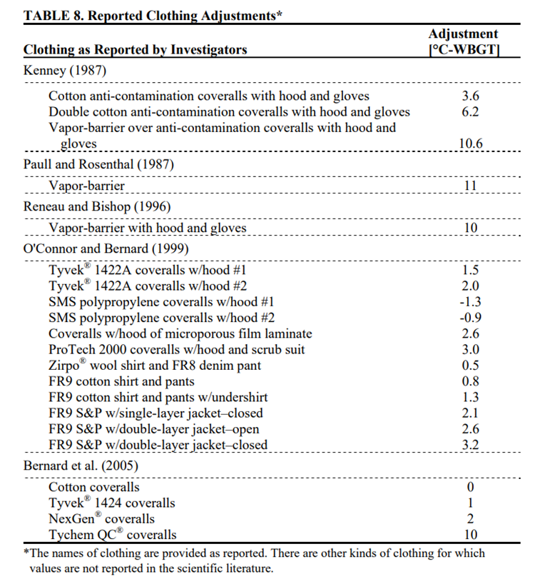
Toucher l'image pour l'agrandirL'humidex sert d'indicateur complémentaire.
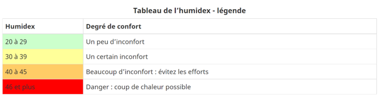
Toucher l'image pour l'agrandirRéglementation RSST
| Art. | Obligation |
|---|---|
| 121 | Mesure obligatoire si >= 50 travailleurs exposés à des conditions atteignant la courbe travail continu, 2 fois/an dont une en été |
| 122 | Méthode WBGT, annexe V |
| 123 | Si dépassement courbe travail continu : surveillance médicale, eau (10-15 °C), 1 douche par 15 travailleurs |
| 124 | Mesures particulières : réaménager poste, alterner travail/repos, EPI |
| 145 | Fournir de l'eau au travailleur |
Travail au froid
Pas de norme québécoise spécifique. Utiliser l'indice éolien d'Environnement Canada et le guide CNESST Travailler au froid : prévenir et soigner les gelures et l'hypothermie (Charbonneau, 2012).
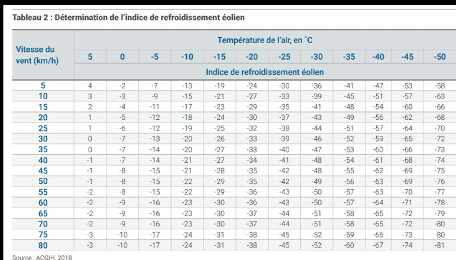
Toucher l'image pour l'agrandirMesures préventives
Suivre la Hiérarchie des moyens de prévention
- Réduction à la source : isolation, écrans réfléchissants, ventilation additionnelle.
- Administratifs : alternance travail/repos, réduction du métabolisme, planification (éviter les heures les plus chaudes).
- EPI : vêtements adaptés (isolation Clo), gants pour le froid, écrans pour la chaleur radiante.
- Acclimatation graduelle : 20 % d'augmentation par jour pour les nouveaux travailleurs.
- Surveillance : eau, pauses, grelottement comme signal d'alarme.
Application terrain
Configurations à risque thermique en mine
| Configuration | Risque | Leviers |
|---|---|---|
| Mine souterraine profonde | Travailler à la chaleur en mine ambiante (>30 °C, HR élevée) | Refroidissement de la ventilation, glace, station de rafraîchissement |
| Surface en été (Nord-du-Québec, Abitibi) | Coup de chaleur, déshydratation | Eau accessible, rotation, planification matinale |
| Surface en hiver (Nord) | Gelures, hypothermie | Vêtements multicouches, abris chauffés, jumelage |
| Cabines d'engins non climatisées | Astreinte cumulée | Climatisation, ventilation augmentée |
| EPI lourd (Protection respiratoire (APR) complet, combinaison Amiante) | Réduction de l'évaporation | Ajustement WBGT vêtements, pauses raccourcies |
Particularités minières
- En mine souterraine profonde, la T° géothermique augmente d'environ 1 °C par 100 m. À 1500 m, la roche peut être à 30-35 °C.
- L'humidité relative en souterrain est souvent > 90 %, ce qui annule l'évaporation comme mécanisme de dissipation.
- Le travail au froid prolongé interagit avec la fatigue cognitive. Voir aussi le wiki psychosociale frère : Milieu Minier et FIFO et Modèle de Karasek (composante demandes physiques).
Ressources
| Document | Type | Source |
|---|---|---|
| RSST annexe V (WBGT) | Règlement | LégisQuébec |
| Guide ACGIH TLV Heat Stress | Référence | ACGIH |
| Travailler au froid (Charbonneau, 2012) | Guide | CNESST, rôles et pouvoirs |
| Guide chaleur souterraine | Guide | INRS |
Articles wiki connexes
- Bruit en milieu de travail
- Rayonnements ionisants et non ionisants
- Qualité de l'air intérieur
- Hiérarchie des moyens de prévention
- Protection respiratoire (APR)
← Accueil
������������������������������������������������������������������������������������������������������������������������������������������������������������������������������������������������������������������������������������������������������������������������������
Pages qui pointent ici (15)
- 🎯 Démarrage rapide, conseiller SST Hygiène industrielle
- 🎯 Démarrage rapide, direction et RH Hygiène industrielle
- 🎯 Démarrage rapide, superviseur Hygiène industrielle
- 🏠 Wiki Hygiène industrielle, mines Hygiène industrielle
- Agresseurs physiques Hygiène industrielle
- art-117-RSST Hygiène industrielle
- art-121-RSST Hygiène industrielle
- art-122-RSST Hygiène industrielle
- art-123-RSST Hygiène industrielle
- art-124-RSST Hygiène industrielle
- art-145-RSST Hygiène industrielle
- Bruit en milieu de travail Hygiène industrielle
- Environnement de travail Hygiène industrielle
- Qualité de l'air intérieur Hygiène industrielle
- Rayonnements ionisants et non ionisants Hygiène industrielle